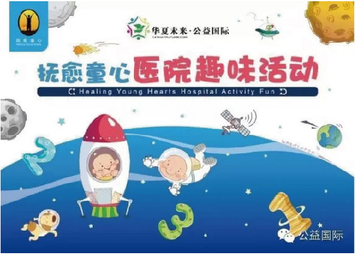
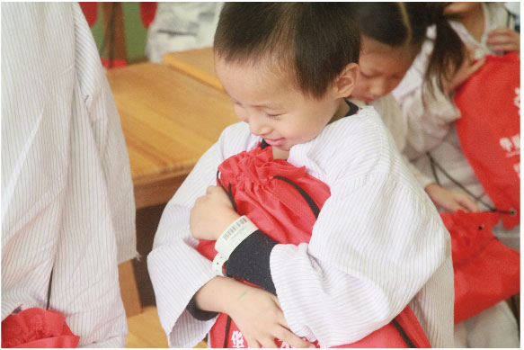

1.项目内容
项目主要针对罹患重症儿童进行心理疏导及关爱活动，其家属的早期心理干预、患儿家长读书会、患儿家属联盟、专门服务儿童的志愿者的培训和“公益接力”服务病患儿童志愿者项目落地、恢复期患儿的艺术课程培训等工作。
组织心理专家、儿童教育专家以及社工为罹患重症的儿童开展心理疏导，通过长期的与病患儿的接触总结出一套病患儿心理疏导方法。2014年12月开始华夏未来快乐成长俱乐部聘请了加拿大、美国、台湾的儿童心理、教育专家共同编写了一部针对住院患有危及生命疾病的儿童的心理疏导书籍（例如白血病、肿瘤和癌症等患儿），创建一套住院儿童游戏活动包，免费发放给医院和有患儿的贫困家庭。

2.如何使用游戏包
每个住院游戏活动包包含了有趣的涂色页，游戏，拼图和鼓励人心的故事。志愿者和医疗人员可以使用它们来引导孩子谈论他们在医治过程中的感觉和情绪。让病童切实感觉到自身周围的社会支持体系，这个支持体系不仅来自患儿的家庭，更有充满爱心的医护人员和众多志愿者。通过专家心理咨询、专业社工和志愿者服务、利用游戏包以及游戏疗法书籍鼓励患儿树立自信心，更好的面对白血病，肿瘤或癌症的挑战。游戏疗法的书籍里其中还有专门写给父母的部分，希望这部分内容能够为患儿有长期慢性病儿童的父母提供有益的帮助和指导。同时我们也将开展针对患儿家长的心理干预，缓解他们的精神压力。组建患儿家属联盟使他们相伴度过难关。
3.游戏包的作用
目前，已通过儿童义演捐助、企业捐助、基金会自筹的方式获得善款，游戏活动包编制成功，经过前期在肿瘤医院和血液病医院小范围调研实验，运用书籍和游戏包对孩子治疗过程中消减痛苦，树立信心具有显著效果，90%的孩子变得开朗乐观起来。